Le migliori colonne sonore dagli anni '30 ad oggi
Le migliori colonne dagli anni '30 ad oggi
CINESONORE
Le migliori colonne sonore dagli anni '30 ad oggi
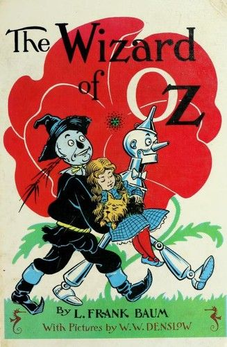
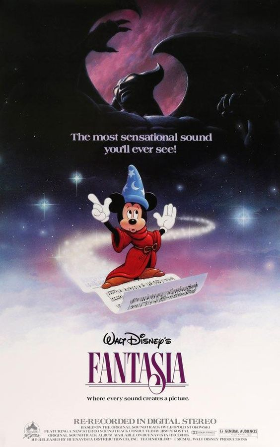
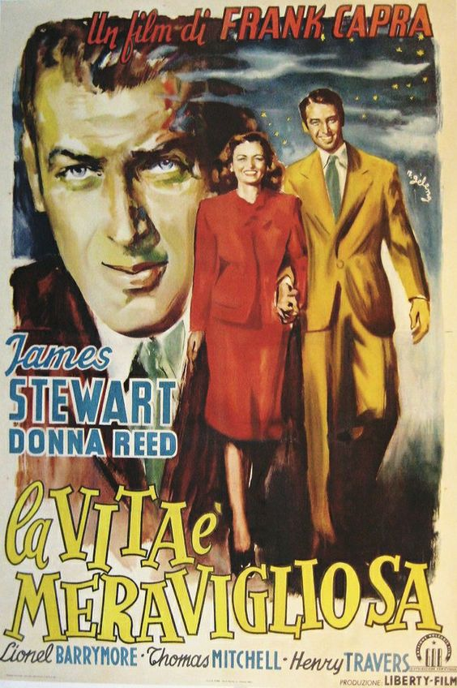
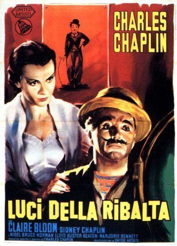
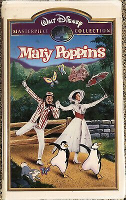
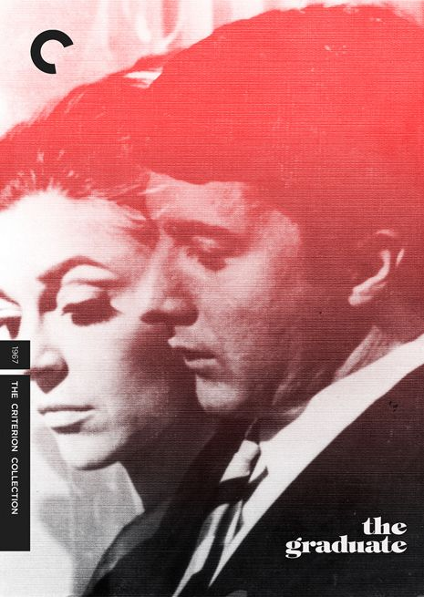
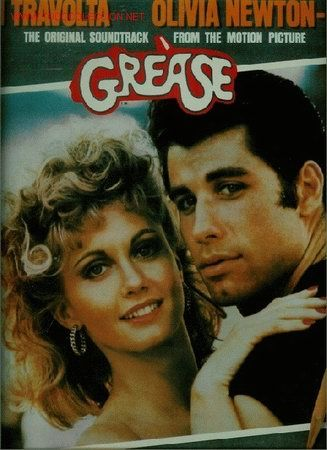
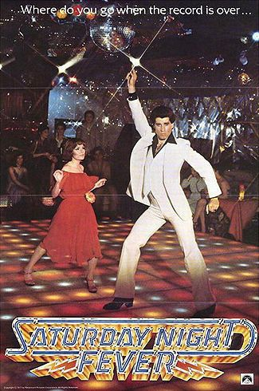
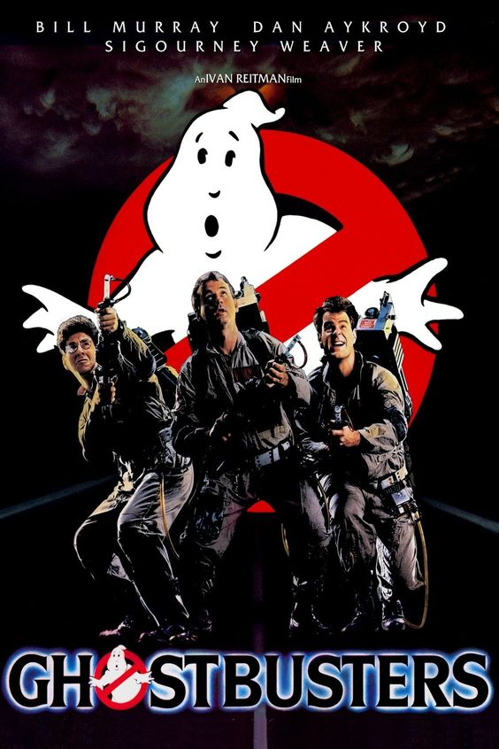
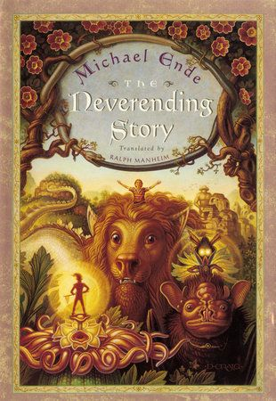
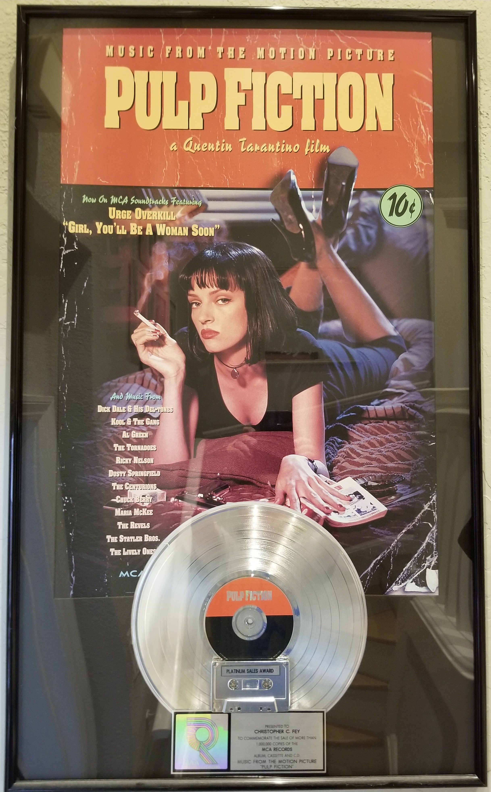
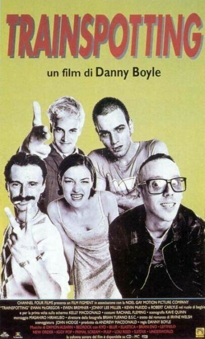
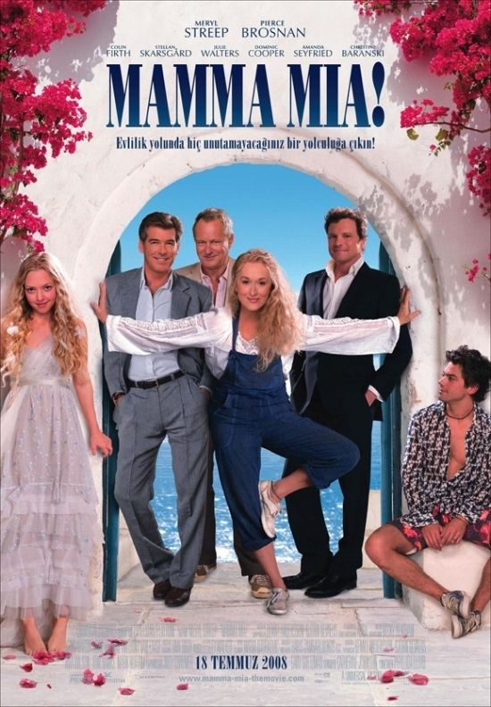
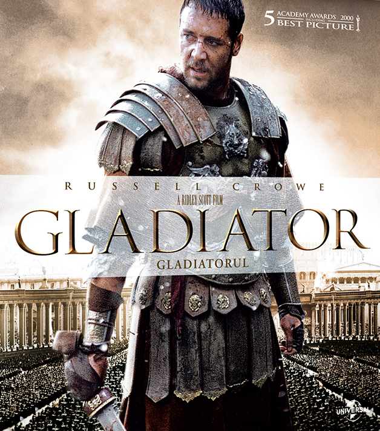
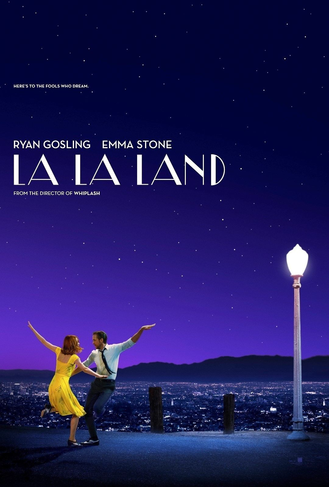
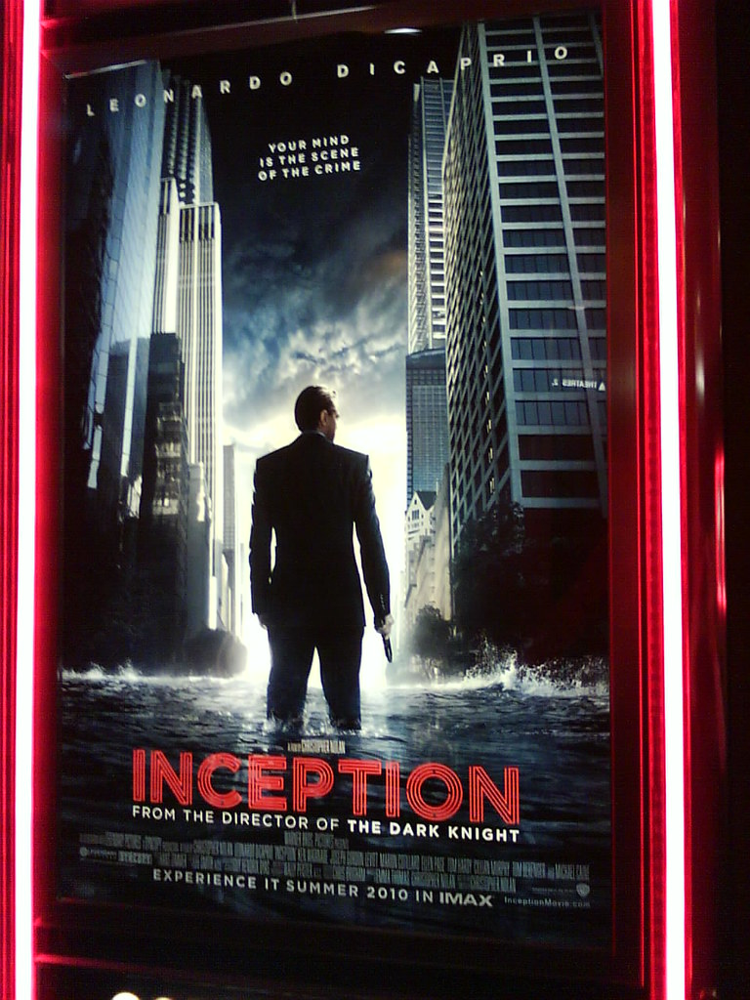
Realizzato da Maria Giuseppina Gallo, Giulia Marchi e Alessandro Monti